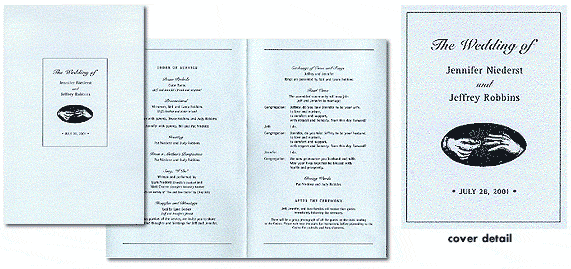

|
 This is the program that was handed out at the wedding ceremony. The hand motif, again, was taken from the invitation. I had wanted to get more fancy with the program, but eventually ran out of time and patience. It is printed on an interesting irridescent paper which made it kind of special. |